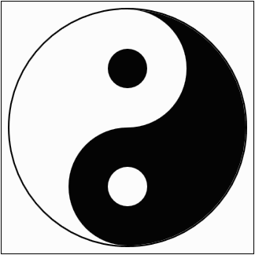

Ejercicio 3
Escriba dos programas que generen las siguientes imágenes a partir de las plantillas siguientes:
Notas:
- La primera imagen se compondrá de formas simples. Además de los círculos, puede ser necesario dibujar un rectángulo.
- La segunda imagen se generará mediante uno o dos bucles for que incluyan fórumlas.

<!DOCTYPE html>
<html lang="es">
<head>
<meta charset="utf-8" />
<title>Ejercicio 3-1. SVG. Examen. Python</title>
<meta name="viewport" content="width=device-width, initial-scale=1.0" />
</head>
<body>
<svg version="1.1" xmlns="http://www.w3.org/2000/svg"
width="320" height="320" viewBox="-10 -10 320 320"
style="border: black 1px solid">
</svg>
</body>
</html>

<!DOCTYPE html>
<html lang="es">
<head>
<meta charset="utf-8" />
<title>Ejercicio 3-2. SVG. Examen. Python</title>
<meta name="viewport" content="width=device-width, initial-scale=1.0" />
</head>
<body>
<svg version="1.1" xmlns="http://www.w3.org/2000/svg"
width="320" height="320" viewBox="-160 -160 320 320"
style="border: black 1px solid">
</svg>
</body>
</html>